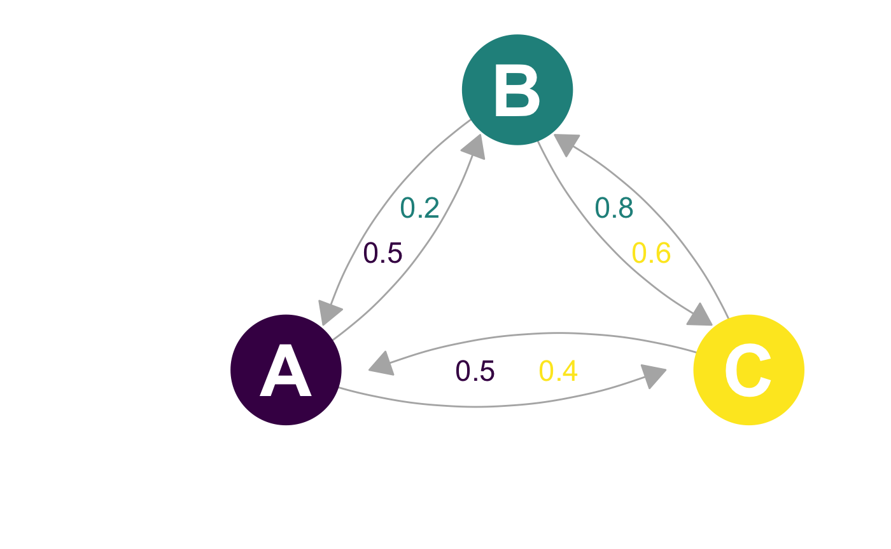

single-host-discrete.RmdNosoi can accommodate a wide range of epidemiological transmission scenarios, including structured host populations (in discrete states), such as for example geography (locatio nA, location B, etc.), and allows for parameters values to change according to the host current location. This tutorial will focus on setting up a Nosoi simulation for a single-host pathogen whose host population is structured between different locations. This tutorial builds on the “simple” case scenario presented before; I thus highly recommand reading this one first.
We will consider here a population of hosts that are in three different locations called “A”, “B” and “C”. Hosts can move (if they undergo a movement event) between these locations with a certain probability you can set or derive from other data. Here, the transition matrix, called here after structure.matrix is:
#> A B C
#> A 0.0 0.5 0.5
#> B 0.2 0.0 0.8
#> C 0.4 0.6 0.0Which can graphically be represented:

For structure.matrix to be adequate, a few rules have to be followed:
structure.matrix should be of class matrix;structure.matrix should have the same number of rows and columns, and they should have the same names;structure.matrix rows represents departure state and columns arrival states, the value is the probability from going from departure state to arrival state if movement is undergone, and should thus sum up to 1.As we have seen before, the wrapper function nosoiSim takes all the arguments that will be passed down to the core function, in the case of this tutorial: singleDiscrete (for “single host, discrete population structure”). We thus start by providing the options type="single" and structure=TRUE to set up the analysis:
SimulationB <- nosoiSim(type="single", structure=TRUE, ...)This simulation (singleNone) type takes several arguments or options to be able to run, namely:
length.simmax.infectedinit.individualsinit.structurestructure.matrixpExit with param.pExit and diff.pExit
pMove with param.pMove and diff.pMove
timeContact with param.timeContact and diff.timeContact
pTrans with param.pTrans and diff.pTrans
prefix.hostAll the param elements provide individual-level parameters to be taken into account; the diff elements informs the simulator if there is a differential probability according to the state the host is currently in.
length.sim and max.infected are general parameters that define the simulation: length.sim is the maximum number of time units (e.g. days, months, years, or another time unit of choice) during which the simulation will be run, whereas max.infected is the maximum number of individuals that can be infected during the simulation. The simulation will thus run until either the time limit or the maximum number of infected individuals is reached.
init.individuals and init.structure are the “seeding parameters”. init.individuals defines the number of individuals (starting at 1, should be an integer) that will start a transmission chain and init.structure their original location in the structured population (has to be the same original location for all starting individuals). Keep in mind that you will have as many transmission chains as initial individuals, which is equivalent as launching two independant Nosoi simulations. The location provided in init.structure should of course be present in the structure.matrix.
Here, we will run a simulation starting with 1 individual in state “A”, for a maximum of 1.000 infected individuals and a maximum time of 300 days.
SimulationA <- nosoiSim(type="single", structure=TRUE,
length.sim=300, max.infected=1000, init.individuals=1, init.structure="A", ...)